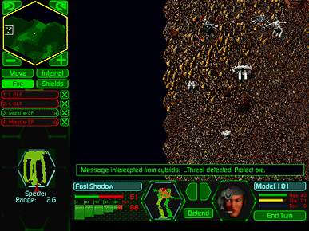

Anti-Gravity Unit – lowers the gravity effect on your Herc; more valuable on high-gravity worlds; may have no effect on a very low-gravity world; these variables will also affect the Herc’s Speed Rating.